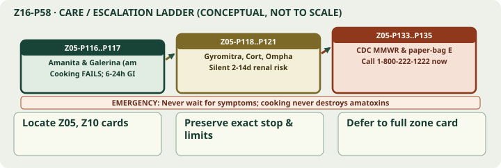

Z16-P58 · Field reference atlas · New manuscript
Lethal Fungi Cross-Reference: Amanita, Galerina, Gyromitra and Cortinarius
Highlight the four deadliest Minnesota, Upper Midwest fungal toxin classes and immediate CDC, Poison Control emergency protocols.
When it applies · High-consequence fungal hazard recognition and clinical toxicology escalation.
Equipment · Full offline reader (Z05, Z10), primary zone cards, and local emergency and agency references.

Actions
- Recognize heat-stable amatoxin mushrooms documented in CDC Minnesota and 2026 outbreaks: Amanita bisporigera, phalloides (free white gills, ring, hidden soil volva, white spores, Z05-P116) and Galerina marginata (small brown caps on rotting wood, faint ring, RUSTY-BROWN spores mimicking Armillaria, Flammulina, Z05-P110, Z05-P113, Z05-P117).[A05, B06, B07, B08]
- Recognize lethal gyromitrin false morels (brain-lobed chambered Gyromitra, Z05-P118), delayed renal-failure webcaps (Cortinarius cobweb veil + rusty spores, 2–14+ day silent onset, Z05-P119), violent GI jack-o-lanterns (Omphalotus on wood, orange flesh, Z05-P120), and green-spored lawn parasols (Chlorophyllum molybdites, Z05-P121).[A05, B08]
- Act immediately on ANY suspected wild mushroom ingestion without waiting for 6–24 hour delayed symptoms or trusting day-two false recovery: save uneaten pieces in dry paper bags and call 1-800-222-1222 or 911 at once (Z05-P133..P135).[A09, B06, B08, B09]
Failure recognition · Boiling an unknown mushroom, waiting overnight for nausea, or discarding leftover trimmings leads to preventable liver or kidney transplant failure and death.[B06, B07, B08]
Verify · All lethal fungal syndromes, heat-stability warnings, paper-bag specimen preservation, and 1-800-222-1222 triggers align.[B06, B08, B09]
Stop or change course · Stop waiting immediately and activate 1-800-222-1222 and emergency hospital care after any suspected wild mushroom ingestion.[B06, B09]
Evidence and editorial notes
- A05 · Bell Museum (UMN) · Minnesota Biodiversity Atlas (Current web edition)
- Section: Botanical and fungal cross-reference with permanent consumption HOLD · Conditions: Indexing Z05 species morphology, lookalikes, and Poison Control referrals
Support: Atlas botanical/fungal tables index accepted names, phenology, and lethal lookalikes solely for observation, hazard avoidance, and voucher documentation.
Limitations: No Z16 index entry may imply edibility or bypass Z05 multi-character and expert-review gates. · Conflicting evidence: None noted.
Editorial note: Preserves Z05 consumption HOLD inside Z16. · Specialist reviewer: Botanist and mycologist
Primary source · checked 2026-11-25 - A09 · Minnesota Poison Control System · Poison Help 1-800-222-1222 and Regional Plant/Mushroom Guidance (Current web edition)
- Section: Consolidated emergency communication, reporting, and referral directory · Conditions: Cross-zone emergency escalation across Z01, Z05, Z06, Z07, Z10, Z11, Z13, Z15
Support: Emergency lookup tables separate 911 life-threat activation, Poison Help 1-800-222-1222, utility leak/outage lines, and DNR wildlife/TIP reporting.
Limitations: Cell coverage fails in remote areas; pre-plan offline communication and backup evacuation routes. · Conflicting evidence: None noted.
Editorial note: Standardizes Z16 emergency contact index. · Specialist reviewer: EMS and emergency communications reviewer
Primary source · checked 2026-11-25 - B06 · CDC MMWR · Notes from the Field: Severe Mushroom Poisoning — Minnesota 2018 (MMWR 68(21))
- Section: Minnesota severe mushroom poisoning outbreak (MMWR 68:21) · Conditions: Wild mushroom foraging and lookalike misidentification in Minnesota
Support: Foragers in Minnesota suffered severe hepatotoxic poisoning after mistaking lethal amatoxin-containing mushrooms for familiar edible species.
Limitations: Delayed gastrointestinal onset (6-24+ hours) followed by a false recovery phase precedes liver failure; treat any wild mushroom ingestion with symptoms as a medical emergency. · Conflicting evidence: None noted.
Editorial note: Critical Minnesota fungal hazard evidence. · Specialist reviewer: Medical toxicologist and mycologist
Primary source · checked 2026-11-25 - B07 · CDC MMWR · Amanita phalloides Mushroom Poisonings — 2026 Outbreak Report (MMWR 75(20))
- Section: Amanita phalloides outbreak and amatoxin lethality (MMWR 75:20) · Conditions: Recognizing lethal Amanita lookalike risk and cooking myths
Support: Amatoxins in death cap and destroying angel species survive boiling, freezing, and drying; misidentification causes acute liver failure and death.
Limitations: Never rely on folklore tests, boiling, peeling, or visual similarity to safe regional species. · Conflicting evidence: None noted.
Editorial note: Prohibits boiling/peeling mushroom myths. · Specialist reviewer: Medical toxicologist and mycologist
Primary source · checked 2026-11-25 - B08 · North American Mycological Association · Mushroom Poisoning Syndromes Reference (Current web edition)
- Section: Mushroom poisoning syndrome classes and specimen retention · Conditions: Evaluating suspected wild fungal exposure
Support: Mushroom toxins span distinct syndromes (amatoxins, gyromitrin, orellanine, muscarine, ibotenic acid, GI irritants) with onset from minutes to days.
Limitations: Save remaining uneaten mushroom pieces in a paper bag (not sealed plastic) for mycologist identification if exposure occurs, and call Poison Control immediately. · Conflicting evidence: None noted.
Editorial note: Grounds Z05 fungal toxicology & emergency referral. · Specialist reviewer: Mycology toxicology reviewer
Primary source · checked 2026-11-25 - B09 · Minnesota Poison Control System · Poison Help 1-800-222-1222 and Regional Plant/Mushroom Guidance (Current web edition)
- Section: Minnesota Poison Control 1-800-222-1222 immediate referral · Conditions: Any suspected toxic plant, berry, root, or mushroom ingestion or severe dermal exposure
Support: Call 1-800-222-1222 immediately (or 911 for breathing difficulty, collapse, seizures, or altered alertness); do not wait for delayed symptoms.
Limitations: Never induce vomiting or administer home remedies unless explicitly instructed by Poison Control or EMS. · Conflicting evidence: None noted.
Editorial note: Mandatory Z05 poison-response escalation. · Specialist reviewer: Clinical toxicologist / Poison Center
Primary source · checked 2026-11-25
Source lineage · New manuscript (Z16 P20 mycology toxicology) · Classification · New manuscript.